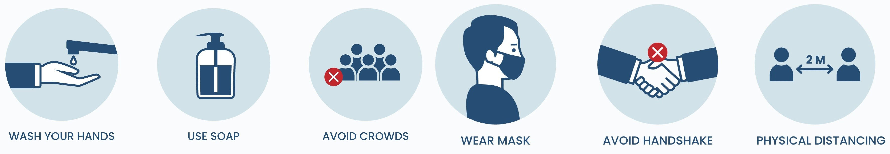
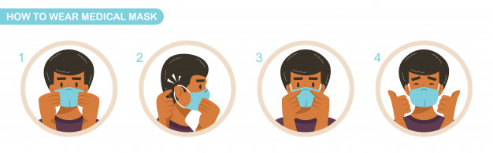

OVERVIEW
Coronaviruses are a large family of viruses which may cause illness in animals or humans. In humans, several coronaviruses are known to cause respiratory infections ranging from the common cold to more severe diseases such as Middle East Respiratory Syndrome (MERS) and Severe Acute Respiratory Syndrome (SARS). The most recently discovered coronavirus causes coronavirus disease COVID-19.
SYMPTOMS
COVID-19 affects different people in different ways. Most infected people will develop mild to moderate illness and recover without hospitalization.
a. Most common symptoms:
• Fever
• Dry cough
• Tiredness
b. Less common symptoms:
• Aches and Pains
• Sore Throat
• Diarrhoea
• Conjunctivitis
• Headache
• Loss of taste or smell
• A rash on skin, or discolouration of fingers or toes
c. Serious symptoms:
• Difficulty breathing or shortness of breath
• Chest pain or pressure
• Loss of speech or movement
Seek immediate medical attention if you have serious symptoms. Always call before visiting your doctor or health facility.
People with mild symptoms who are otherwise healthy should manage their symptoms at home.
On average it takes 5–6 days from when someone is infected with the virus for symptoms to show, however it can take up to 14 days.
Some reports have indicated that people with no symptoms can transmit the virus. It is not yet known how often it happens.
CAUSES
COVID-19 is the infectious disease caused by the most recently discovered coronavirus. This new virus and disease were unknown before the outbreak began in Wuhan, China, in December 2019. COVID-19 is now a pandemic affecting many countries globally.
PREVENTION
Prevent the spread of COVID-19:
• Clean your hands often. Use soap and water, or an alcohol-based hand rub.
• Maintain a safe distance from anyone who is coughing or sneezing.
• Wear a mask when physical distancing is not possible.
• Don’t touch your eyes, nose or mouth.
• Cover your nose and mouth with your bent elbow or a tissue when you cough or sneeze.
• Stay home if you feel unwell.
• If you have a fever, cough and difficulty breathing, seek medical attention.
• Keep up to date on the latest COVID-19 hotspots.
Calling in advance allows your healthcare provider to quickly direct you to the right health facility. This protects you, and prevents the spread of viruses and other infections.
Mask
Masks can help prevent the spread of the virus from the person wearing the mask to others. Masks alone do not protect against COVID-19, and should be combined with physical distancing and hand hygiene. Follow the advice provided by your local health authority.
WHAT TO EAT
Power up with a plant-based diet by eating mostly vegetables, fruits, whole grains and beans. Plant-based eating means 25% or less of your foods are animal proteins such as meat, poultry, eggs, fish, and dairy products. To get enough protein, swap animal proteins for lentils, dried beans, seeds, nuts, tofu and other plant proteins.